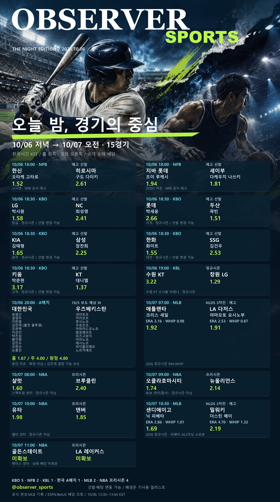

MATCHDAY ARCHIVE · 2026.10.06
텔레그램 스포츠 경기표
오늘 저녁부터 내일 오전까지.
KBO·NPB·MLB·KBL·NBA와 한국 대표팀. 15경기의 시간, 선발, 확인된 배당을 한 장에서 비교하는 공개 자료실입니다.
경기표와 오늘 뉴스 함께 보기 →한국시간 10월 6일 저녁~7일 정오 전 시작 경기 · 10월 6일 13:30~13:44 조회 자료 · 실시간 배당 아님

일정 범위
- 10/6 18:00 NPB 2경기
- 18:30 KBO 5경기
- 19:00 수원 KT–창원 LG
- 20:00 한국–우즈베키스탄
- 10/7 07:00·10:30 MLB NLDS 2경기
- 08:00~11:00 NBA 프리시즌 4경기
확인한 것과 남은 것
승패 배당은 15경기 중 14경기에서 확인했습니다. 골든스테이트–LA 레이커스 배당은 확인하지 못해 비워 두었습니다.
축구 예상 XI는 10월 5일 매체 전망이며 공식 선발이 아닙니다. 김민재 관련 후속 보도처럼 경기 전 소식이 달라질 수 있습니다. NBA는 정규시즌이 아닌 프리시즌입니다.
스포츠 분석: 숫자를 보기 전 표본부터
내일 NLDS 선발 비교에서 닉 피베타의 정규시즌 표본은 34.2이닝, 더스틴 메이는 145.2이닝입니다. 평균자책점만 나란히 놓으면 같은 조건의 비교처럼 보이지만, 기록이 쌓인 양이 다릅니다. 메이의 수치는 이적 전후를 합친 시즌 기록입니다.
토토 분석 정보를 읽을 때도 배당의 조회 시각, 경기 유형, 선발 확정 여부를 먼저 확인하세요. 낮은 배당이나 낮은 ERA는 승리 보장이 아닙니다.
NLDS 선발 비교와 공식 기록 →오늘 뉴스로 이어 읽기
- ALDS: 탬파베이·화이트삭스 2연승 — 시리즈 진출 확정과 구분
- U-21 호주 원정 1승 1무, 오늘 밤 A대표팀 경기 — 서로 다른 대표팀
- SSG·KT 신인 계약 완료 — 지명일과 계약 완료일 구분
- 영국 불법 포커장 판결 소식 — 10월 5일 발표, 오늘 새 단속이 아님